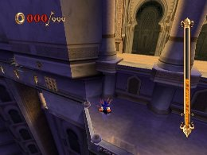
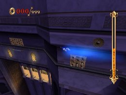
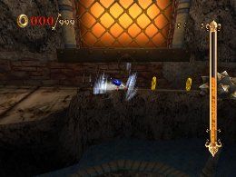
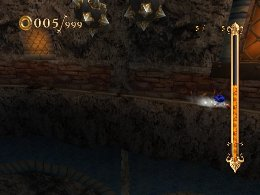

壁歩き攻略
上級者編
ソニックが壁に背を向けて細い道を進んでいく壁歩きは、リモコンを左右に傾ける事で移動が可能なエリアですが、「スピードアップ」系のスキルを付けたのに、あまり速くなっていない印象を受けた事はないでしょうか。
実際に、壁歩きに影響するスキルは「クイックステップ」系になっており、「クイックメガステップ」を装備すると、かなりの速さを体感出来るでしょう。
ただし、操作難易度も上がるので、その分は注意が必要になってきます。
ここで、役に立つ壁歩きテクニックを紹介します。
それは壁歩き状態になる前に、「ショートジャンプ」または「チャージジャンプ」で進入し、ソニックが着地をする前に「ジャンプダッシュ」をすることで、壁歩き状態にならずに進む事が出来ます。
トゲパネルや鉄球がたくさんある場所などはミスをしやすくなってしまいますが、障害物の少ない開けた場所なら有効なテクニックといえます。

そしてもう一つが、究極ともいえるテクニックで、「イージススライダー」と「スキマー」系のスキルを装備し、壁歩き状態になる前に、最高速でスライディングをしてみましょう。
するとスライディング状態のまま壁歩きエリアを通過でき、なおかつ障害物に当たってもミスになりにくい為、壁歩きが苦手な人は上記のスキルを装備して試してみてはいかがでしょうか。

スーパープレイ
イビルファウンドリー
ゴー フォー ザ ゴール 最深部へいそげ！
序盤の壁歩き場面を「イージススライダー」と「ハイパースキマー」を使って一気に突破します。
【装備スキル一覧】
チャージャー オールラウンダー クイックハイステップ スーパークイックエア ワープブースト ハイパースピードアップ ランディングブースト ファイヤータックル キャンセルブースト ファイヤーゲイズ スプラッシュジャンプ ロケットジャンプ Ｈメガエキスパンズ ホーミングリカバリー エキスパートアタック クイックジャンプ イージススライダー クイックハイスライド ハイパースキマー スロードサーチ ハイパーサージ ハードブレーキ バックステップ ファイヤーステップ Ｈパールコレクター リングボーナス ワープダッシュ エキスパートドリフト ホーミングボーナス チェインボーナス マッハグラインド クレストオブウィンド
 RSS
RSS